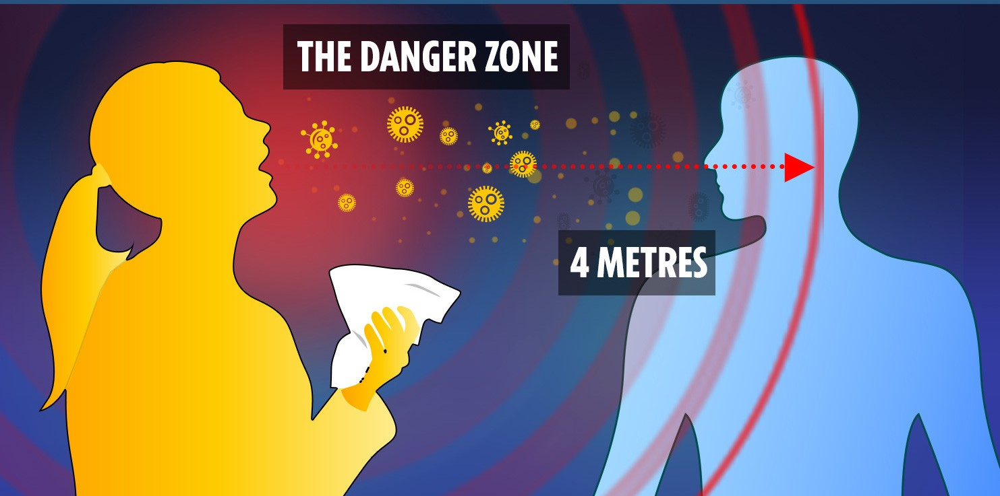
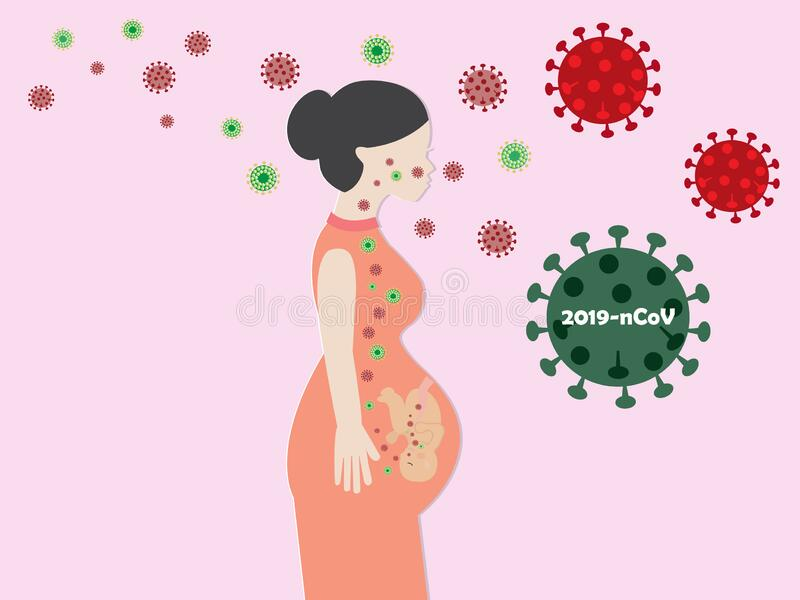

When we get to KNOW!!
Normal indications of this contamination incorporate fever, a dry hack, weariness, and trouble breathing or brevity of breath. The disease causes lung injuries and pneumonia. A portion of these side effects covers with those of this season's flu virus, making recognition troublesome, however runny noses and stodgy sinuses are less normal. The C.D.C. has likewise included chills, muscle torment, sore throat, cerebral pain, and another loss of the feeling of taste or smell as side effects to pay special mind to. Patients may likewise show gastrointestinal issues or loose bowels, and Dr. Neill said we are finding out about various side effects as we go. A great many people become sick five to seven days after presentation, yet side effects may show up in as not many as two days or upwards of 14 days. The Centers for Disease Control and Prevention says the accompanying side effects — if you are in any case sound — should provoke you to look for crisis treatment.
- Trouble relaxing
- Persevering agony or weight in the chest
- Disarray or failure to stir
- Somewhat blue lips or face
- Whatever other side effect that is extreme or concerning
Indications are normally mellow and start bit by bit. A few people become tainted yet just have extremely mellow side effects. A great many people (about 80%) recuperate from the ailment without requiring emergency clinic treatment. Around 1 out of each 5 individuals who get COVID-19 turns out to be genuinely sick and create trouble relaxing. More seasoned individuals, and those with basic clinical issues like hypertension, heart and lung issues, diabetes, or malignant growth, are at higher danger of building up a genuine ailment. Anyway anybody can get COVID-19 and become genuinely sick. Indeed, even individuals with exceptionally gentle indications of COVID-19 can transmit the infection. Individuals of any age who experience fever, hack, and trouble breathing should look for clinical consideration. COVID-19 is for the most part spread through respiratory beads removed by somebody who is hacking or has different side effects, for example, fever or tiredness. Numerous individuals with COVID-19 experience just gentle indications. This is especially evident in the beginning periods of the infection. It is conceivable to get COVID-19 from somebody who has only a gentle hack and doesn't feel sick. A few reports have shown that individuals without any indications can transmit the infection. It isn't yet known how frequently it occurs. WHO is surveying continuous research on the theme and will keep on sharing refreshed discoveries.
Individuals can get COVID-19 from other people who have the infection. The infection spreads basically from individual to individual through little beads from the nose or mouth, which are removed when an individual with COVID-19 hacks, wheezes, or talks. These beads are moderately substantial, don't go far and rapidly sink to the ground. Individuals can get COVID-19 on the off chance that they take in these beads from an individual contaminated with the infection. This is the reason it is essential to remain in any event 1 meter (3 feet) away from others. These beads can arrive on items and surfaces around the individual, for example, tables, door handles, and handrails. Individuals can get tainted by contacting these articles or surfaces, at that point contact their eyes, nose, or mouth. This is the reason it is essential to wash your hands normally with cleanser and water or clean with liquor based hand rub. WHO is surveying continuous research on the ways that COVID-19 is spread and will keep on sharing refreshed discoveries. Research demonstrates that kids and young people are similarly prone to get tainted as some other age gathering and can spread the illness. Proof to date recommends that youngsters and youthful grown-ups are more averse to get the extreme ailment, yet serious cases can in any case occur in these age gatherings. Kids and grown-ups ought to follow a similar direction on self-isolate and self-separation if there is a hazard they have been presented to or are demonstrating manifestations. It is especially significant that kids stay away from contact with more established individuals and other people who are in danger of progressively serious infection. 
Research is at present in progress to comprehend the effects of COVID 19 contamination on pregnant ladies. Information are restricted, yet at present there is no proof that they are at higher danger of extreme sickness than everyone. In any case, because of changes in their bodies and resistant frameworks, we realize that pregnant ladies can be gravely influenced by some respiratory contaminations. It is in this way significant that they play it safe to ensure themselves against COVID-19, and report potential side effects (counting fever, hack, or trouble breathing) to their human services supplier. We despite everything don't have a clue whether a pregnant lady with COVID-19 can pass the infection to her hatchling or child during pregnancy or conveyance. Until this point in time, the infection has not been found in tests of amniotic liquid or breastmilk.
Smokers are probably going to be increasingly helpless against COVID-19 as the demonstration of smoking implies that fingers (and conceivably polluted cigarettes) are in contact with lips which expands the chance of transmission of the infection from hand to mouth. Smokers may likewise as of now have lung sickness or decreased lung limit which would extraordinarily build the danger of genuine ailment. Smoking items, for example, water pipes frequently include the sharing of mouthpieces and hoses, which could encourage the transmission of COVID-19 in mutual and social settings. Conditions that expand oxygen needs or lessen the capacity of the body to utilize it appropriately will put patients at higher danger of genuine lung conditions, for example, pneumonia.
A few canines and felines (residential felines and a tiger) in contact with contaminated people have tried constructive for COVID-19. Furthermore, ferrets have all the earmarks of being vulnerable to the contamination. In trial conditions, the two felines and ferrets had the option to transmit the contamination to different creatures of similar species, however, there is no proof that these creatures can transmit the sickness to people and assume a job in spreading COVID-19. COVID-19 is for the most part spread through beads created when tainted individual hacks, sniffles, or talks. It is still suggested that individuals who are debilitated with COVID-19 and individuals who are in danger limit contact with a buddy and different creatures. When dealing with and thinking about creatures, essential cleanliness measures ought to consistently be actualized. This incorporates hand washing in the wake of taking care of creatures, their food, or supplies, just as abstaining from kissing, licking, or sharing food. While starting examinations propose the infection might be available in dung at times, until this point, there have not been reports of fecal-oral transmission of COVID-19. Moreover, there is no proof to date on the endurance of the COVID-19 infection in water or sewage. WHO is surveying progressing research on the ways COVID-19 is spread.